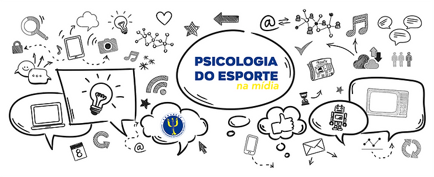
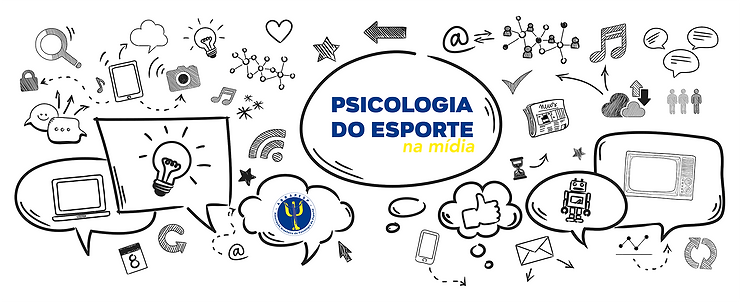

Acompanhamos as publicações sobre psicologia do esporte nos canais de web e resolvemos colocar aqui o que encontramos de interessante. Vamos lá!
Recursos X Resultados
A seleção masculina americana de goalball, que venceu a equipe brasileira nos Jogos Paraolímpicos de Tóquio 2020 com uma vitória por 8-6, estreou com uma novidade: o técnico Keith Young que justifica a vitória com seus pedidos “ao USOPC (Comitê Olímpico e Paraolímpico dos Estados Unidos) e USABA (Associação de Atletas Cegos dos Estados Unidos) e agradeço por fornecer esses recursos … de tecnologia vestível a nutrição esportiva e psicologia do esporte e muito mais . “ (matéria publicada no Arena 4G).
Psicologia do Esporte e Tênis
O destaque da semana é o tênis.
O Aberto dos Estados Unidos, um dos quatro maiores eventos do mundo de tênis que começa na segunda-feira, dia 30, anunciou a criação de um programa de assistência à saúde mental dos atletas que disputarem a competição em Nova York que termina no dia 12 de setembro. Cada atleta terá psicólogos credenciados pelo evento disponíveis para consultas. … – Matéria do Jornal O Lance republicada no UOL clicando aqui , na Isto é e Yahoo! Esportes
“A prática do esporte favorece a sociabilidade, facilita a construção da disciplina, foco, persistência, bem como estimula a cognição e as funções perceptivas”.
Artigo do EM TEMPO, do Amazonas, fala sobre “Psicologia do Esporte e Saúde Mental”. Escrito por Lígia Maria, Duque Assis e Juliana Coutinho Borges, e publicado no dia 24/08/2021 – fez uma pesquisa sobre a história da Psicologia do esporte e cita Cristiano Barreira, ex-presidente da ABRAPESP – Clique aqui para saber mais
Estudo do Núcleo Aplicado de Psicologia do Esporte da UERJ
“Psicólogos da UERJ recomendam formas de aprimorar o rendimento de atleta”- matéria de Alana Grandra, repórter da Agencia Brasil no Rio de Janeiro no dia 5/8/2020 – leia mais clicando aqui